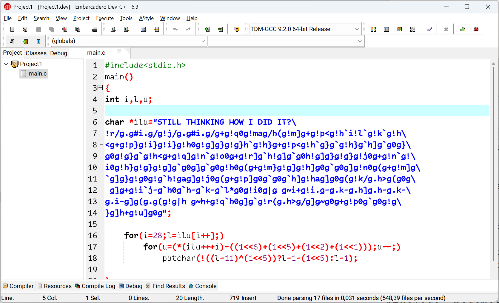

A criação de um programa em C¶
Quando escrevemos um programa em C, o código que criamos, geralmente salvo em arquivos com extensão .c (os arquivos fonte), não pode ser executado diretamente pelo computador.
A razão disso é porque o processador só entende instruções em linguagem de máquina, um código binário bem diferente das palavras e comandos que usamos em C, como printf() ou int. O processo de compilação é justamente o que transforma esse código legível por humanos em algo que o computador pode executar.
Para transformar arquivos com o código fonte em um programa que possa ser executado pelo computador, precisamos passar por quatro etapas: edição do código fonte, pré-processamento, compilação e montagem, e link-edição. O programa executável só existe depois da última etapa concluída.
graph TD
Fonte1 --> Preprocessamento1 --> Processado1
Fonte2 --> Preprocessamento2 --> Processado2
BibEstat1 --> Compilador1
BibEstat2 --> Compilador1
Processado1 --> Compilador1 --> Obj1
Processado2 --> Compilador2
BibEstat1 --> Compilador2 --> Obj2
Obj2 --> Link
Obj1 --> Link --> Exec
Fonte1@{ shape: doc, label: "**Código fonte**<br />(.c, .h)" }
Fonte2@{ shape: doc, label: "**Código fonte**<br />(.c, .h)" }
Preprocessamento1@{ shape: process, label: "Pré-processamento" }
Preprocessamento2@{ shape: process, label: "Pré-processamento" }
Processado1@{ shape: doc, label: "**Código pré-processado**<br />(.i)" }
Processado2@{ shape: doc, label: "**Código pré-processado**<br />(.i)" }
BibEstat1@{ shape: lin-doc, label: "**Biblioteca B1**<br />(.so)" }
BibEstat2@{ shape: lin-doc, label: "**Biblioteca B2**<br />(.so)" }
Compilador1@{shape: process, label: "Compilação e montagem" }
Compilador2@{shape: process, label: "Compilação e montagem" }
Obj1@{ shape: doc, label: "**Código objeto**<br />(.o)" }
Obj2@{ shape: doc, label: "**Código objeto**<br />(.o)" }
Link@{ shape: process, label: "Link-edição" }
Exec@{ shape: doc, label: "**Programa executável**<br />(.exe)" }Vamos discutir de maneira simplificada cada uma delas.
Edição do código fonte¶
Analisando friamente, podemos utilizar qualquer editor de textos para escrever um programa em linguagem C (ou qualquer outra linguagem, como Python, Java ou TypeScript). O problema é que a nossa produtividade (linhas de código que escrevemos pelo esforço dispendido) não vai ser boa.
Um editor de texto está preparado para editar qualquer tipo de texto. Ele não foi pensando para escrever programas, então faltam algumas coisas importantes, como por exemplo a integração com um compilador, um ambiente para executar o programa, ferramentas para auxiliar a resolver erros que aparecem durante a execução ou compilação do programa. O ideal é que façamos o desenvolvimento dentro de um IDE.
Um Ambiente Integrado de Desenvolvimento (IDE, do inglês Integrated Development Environment) é um software que reúne diversas ferramentas essenciais para a programação em um único local, facilitando o desenvolvimento de aplicações. Ele geralmente inclui um editor de código, um compilador ou interpretador, um depurador e outros recursos que auxiliam na escrita, teste e manutenção do código. Eles surgiram para simplificar o processo de programação, que anteriormente exigia que os desenvolvedores escrevessem código em um editor de texto, salvassem o arquivo, acionassem o compilador separadamente e depois retornassem ao editor para corrigir eventuais erros.
Entretanto, o uso de Ambientes Integrados de Desenvolvimento (IDEs) durante o aprendizado de programação é um tópico que gera debates intensos entre desenvolvedores e educadores. Por um lado, as IDEs oferecem uma série de benefícios que podem acelerar o processo de aprendizado e desenvolvimento. Elas fornecem suporte contextual, realce de sintaxe, autocompletar e depuração integrada, o que ajuda a evitar erros e aumenta a produtividade. Além disso, muitas IDEs são projetadas para simplificar o aprendizado, oferecendo uma curva de aprendizado mais suave para iniciantes.
No entanto, há argumentos significativos contra o uso de IDEs durante o aprendizado inicial. Uma das principais preocupações é que as IDEs podem desviar o foco do aluno da linguagem em si para a ferramenta. Recursos como autocompletar e sugestões automáticas podem evitar que os estudantes compreendam completamente a sintaxe e a lógica por trás do código. Além disso, a dependência excessiva em IDEs pode criar dificuldades quando se trabalha em ambientes mais simples ou diferentes, o que é uma habilidade crucial em muitos contextos profissionais.
Diante dessas visões conflitantes, uma abordagem equilibrada pode ser a melhor escolha. Em vez de evitar completamente as IDEs ou se render a todas as suas funcionalidades, podemos optar por usar uma IDE mais simples, como o Embarcadero Dev-CPP, que oferece suporte básico sem sobrecarregar o desenvolvedor com recursos avançados. Essa abordagem permite que os estudantes se beneficiem das vantagens das IDEs, como a integração com compiladores e depuradores, sem perder o foco na linguagem em si. Além disso, ao limitar o uso de recursos avançados, os estudantes são incentivados a entender os conceitos fundamentais da programação, o que é essencial para uma compreensão profunda e duradoura.
Assim, ao utilizar uma IDE como o Dev-CPP de forma controlada, podemos maximizar os benefícios do uso de uma ferramenta integrada enquanto mantemos o foco no aprendizado da linguagem de programação. Isso permite que os estudantes desenvolvam habilidades sólidas em programação, preparando-os para trabalhar em diferentes ambientes e contextos ao longo de suas carreiras.

Tela principal da IDE Dev-CPP (Embarcadero)
Comentários¶
Os comentários em linguagem C são elementos não executáveis que fornecem descrições e explicações adicionais dentro do código-fonte. Eles desempenham um papel fundamental na documentação do programa, tornando-o mais legível e compreensível tanto para o próprio desenvolvedor quanto para outros programadores que possam trabalhar com o código no futuro.
Note
Historicamente, antes da versão C99 (lançada em 1999), apenas os comentários de múltiplas linhas (/* */) eram suportados na linguagem C. Os comentários de linha única (//) foram incorporados aos compiladores C com o padrão C99, tendo sido originalmente uma característica da linguagem C++.
A linguagem C suporta dois tipos principais de comentários.
O primeiro tipo são os comentários de linha única, que começam com duas barras (//) e se estendem até o final da linha. Tudo que estiver após essas duas barras será ignorado pelo compilador durante o processo de compilação. Por exemplo, podemos escrever a linha abaixo em qualquer parte do código, e o compilador simplesmente ignorará esse texto.
O segundo tipo são os comentários de múltiplas linhas, também conhecidos como comentários em bloco. Estes começam com a sequência /* e terminam com */. Todo o texto entre esses delimitadores é considerado um comentário, independentemente de quantas linhas ele ocupe, como no exemplo abaixo.
/* Este comentário pode se estender por várias
linhas e explicar detalhadamente o funcionamento
de determinado trecho de código */
Os comentários são utilizados por diversas razões importantes no desenvolvimento de software:
- Eles tornam o código mais legível para referência futura, o que é especialmente útil quando o programador precisa revisitar seu próprio código após um longo período;
- Os comentários são ferramentas valiosas para depuração, permitindo que partes do código sejam temporariamente desativadas para testes;
- Em ambientes onde múltiplos desenvolvedores trabalham no mesmo projeto, comentários bem escritos facilitam o entendimento do código por todos os membros da equipe, principalmente em códigos complexos ou otimizados, onde a lógica pode não ser imediatamente óbvia.
Veja bem, preste atenção!
Vale ressaltar que os comentários não devem ser usados como substitutos para código mal escrito. A prioridade deve ser sempre escrever código limpo e compreensível, utilizando comentários como complemento para esclarecer intenções e lógicas complexas.
Para utilizar comentários de forma eficaz, é recomendado que eles expliquem o "porquê" por trás do código, não apenas o "como". Comentários devem ser claros e concisos, fornecendo informações suficientes para entender o propósito do código sem serem excessivamente detalhados.
É importante manter os comentários atualizados quando o código é modificado. Comentários desatualizados podem causar confusão e levar a erros de interpretação. Além disso, deve-se evitar comentários redundantes que apenas repetem o que o código já expressa claramente.
Pré-processamento¶
graph LR
Fonte1 --> Preprocessamento1 --> Processado1
Fonte1@{ shape: doc, label: "**Código fonte**<br />(.c, .h)" }
Preprocessamento1@{ shape: process, label: "Pré-processamento" }
Processado1@{ shape: doc, label: "**Código pré-processado**<br />(.i)" }A segunda etapa é o pré-processamento, feita pelo pré-processador, um programa que "prepara" o código antes da compilação propriamente dita.
Quando escrevemos um programa em C, usamos diretivas que começam com #. Essas diretivas são instruções para o pré-processador.
Durante esta fase:
- As macros são expandidas;
- Os arquivos de cabeçalho (.h) são incluídos no arquivo-fonte;
- Espaços desnecessários são removidos, e;
- Comentários são eliminados
O resultado é uma versão do código fonte "limpa". Este arquivo, normalmente com extensão .i, contém todo o código-fonte original mais o conteúdo dos arquivos incluídos e as macros expandidas, gerando um arquivo significativamente maior que o original.
As principais diretivas de pré-compilação são:
-
#include: substituem declarações de inclusão de arquivos, como arquivos de cabeçalho (.h). Isso permite que funções e definições externas sejam incorporadas ao código. Por exemplo, ao escrever#include <stdio.h>, estamos pedindo para incluir o conteúdo do arquivo de cabeçalhostdio.h(que contém declarações de funções comoprintf()) no nosso código; -
#define: realizam substituições de macros, que podem ser valores constantes ou pequenas funções inline. Se usarmos, por exemplo,#define PI 3.14, o pré-processador substituirá todas as ocorrências dePIno código por3.14. Ao fazermos#define QUADRADO(x) ((x) * (x))o pré-processador substitui todas as ocorrências deQUADRADO(valor)pela expressão(valor * valor)antes da compilação. A diretiva pode ser usada também apenas para a definição de um símbolo (#define DEBUG, por exemplo) que pode ter a existência verificada (#ifdef DEBUG, por exemplo); -
#undef: remove faz com que o símbolo ou macro seja apagada da tabela interna. A partir deste ponto, o compilador não conhece mais esta macro; -
#ifdef,#ifndefe outras relacionadas: permitem compilar trechos específicos do código com base em definições previamente estabelecidas. Isso é extremamente útil quando estamos escrevendo um programa que deve rodar em mais de uma arquitetura e, dependendo da arquitetura vai utilizar uma biblioteca ou outra, por exemplo.
| Exemplos de uso de diretivas de compilação | |
|---|---|
Compilação e montagem¶
graph LR
BibEstat1 --> Compilador1
BibEstat2 --> Compilador1
Processado1 --> Compilador1 --> Obj1
Processado1@{ shape: doc, label: "**Código pré-processado**<br />(.i)" }
BibEstat1@{ shape: lin-doc, label: "**Biblioteca B1**<br />(.so)" }
BibEstat2@{ shape: lin-doc, label: "**Biblioteca B2**<br />(.so)" }
Compilador1@{shape: process, label: "Compilação e montagem" }
Obj1@{ shape: doc, label: "**Código objeto**<br />(.o)" }Nesta etapa, o compilador realiza a análise sintática e semântica do código pré-processado. Ele verifica se o código está escrito corretamente, seguindo as regras da linguagem C, como parênteses não fechados, falta de ponto e vírgula, entre outros erros sintáticos.
Se não houver erros, o compilador traduz o código para a linguagem de montagem da máquina (linguagem assembly), que é uma representação de baixo nível mais próxima da linguagem de máquina. O resultado é, normalmente, um arquivo com extensão .s
O código em assembly resultante vai conter instruções específicas para a arquitetura do processador (como x86 ou ARM) que será utilizado.
A etapa de montagem transforma o código assembly em código-objeto, que está em linguagem de máquina, porém ainda não está pronto para ser executado. O código binário resultante ainda não pode ser executado porque pode depender de funções ou variáveis definidas em outros lugares (como em outro arquivo .c ou em bibliotecas externas). Cada arquivo .c gera seu próprio arquivo objeto, de extensão .o, nessa etapa.
A parte do compilador que faz essa conversão é o montador, ou assembler.
Link-edição¶
graph LR
Obj1 --> Link --> Exec
Obj1@{ shape: doc, label: "**Código objeto**<br>(.o)" }
Link@{ shape: process, label: "Link-edição" }
Exec@{ shape: doc, label: "**Programa executável**<br />(.exe)" }Imagine que os arquivos objeto .o são como peças de um quebra-cabeça: cada um tem uma parte do programa, mas eles precisam ser conectados para formar o todo. A link-edição é a etapa final do processo, onde o linkeditor (linker) combina todos os arquivos-objeto gerados e as bibliotecas necessárias em um único arquivo executável. O linker realiza as seguintes tarefas:
- Resolve referências entre os diferentes módulos do programa, garantindo que todas as referências a funções e variáveis estejam devidamente definidas e resolvidas;
- Se o programa utiliza funções externas, como as da biblioteca padrão do C (
stdio.h,math.h), o linker adiciona os arquivos correspondentes ao executável final, e; - Gera o arquivo executável final
O arquivo gerado pode ser executado diretamente pelo sistema operacional.